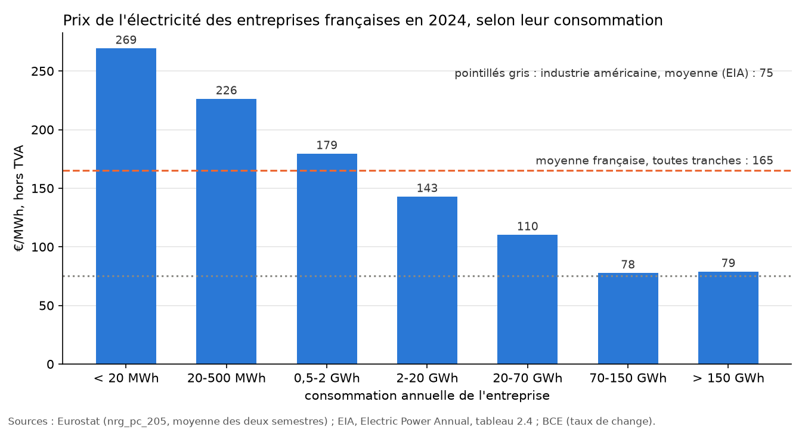

← Tous les thèmes · 11 sur 16
Énergie et nucléaire
Des chiffres presque toujours bien recopiés, mais deux comparaisons mal construites.
- ✓Exact 5
- ≈Proche 4
- !À nuancer 2
- ◆Opinion ou promesse 1
11 affirmations et 1 mesure · 20 sources
1Ce qu'il dit
Ses mots, avant toute vérification. Les étiquettes numérotées renvoient à l'affirmation vérifiée plus bas, sous le même numéro.
Diagnostic
Le nucléaire, un atout gâché.
La France a une électricité presque entièrement décarbonée : le nucléaire « produit encore 70 % de notre électricité » (2020,), dans un pays à « plus de 90 % d'électricité décarbonée » (2026,). Il reproche à Emmanuel Macron d'avoir fermé Fessenheim et programmé « la fermeture de quatorze réacteurs » avant de « rétropédaler en 2022 ».
Une énergie devenue chère pour les entreprises
« entre 2021 et 2024, le prix de l'électricité pour les entreprises a augmenté de 67 % […] 165 €/MWh contre 73 €/MWh aux États-Unis ». Il ajoute une fiscalité lourde : « une accise […] à 30,35 euros/MWh pour les ménages, en hausse de 37 % depuis 2019, quand l'Allemagne l'a ramenée à 0,5 euro/MWh pour son industrie ».
Des renouvelables trop subventionnés
- l'éolien terrestre coûterait « 1,3 milliard » de soutien en 2026 sur 12,9 milliards de charges, avec un coût de rachat de « 97,5 €/MWh […] 37 euros au-dessus du prix de marché » ;
- le raccordement de l'éolien en mer coûterait « 37 milliards d'euros » ;
- la PPE3 serait une « faute stratégique, démocratique et économique ».
Une écologie punitive et mal ciblée
- la France ne pèse que « 0,7 % des émissions » pour « 2,4 % du PIB mondial » ;
- l'Europe a montré que croissance et baisse des émissions sont compatibles (« PIB + 70 % », émissions « − 37 % » en 30 ans,) ;
- le DPE applique « un malus injustifié de 230 % à l'électricité ».
Des ressources inexploitées
« 3 879 milliards de m³ » de gaz de schiste, « 95 ans de consommation ».
Mesures proposées
| Mesure | Ce qu'il en dit | Vérifié plus bas |
|---|---|---|
| Relance du nucléaire | « arrêter le plan de démantèlement, prolonger les réacteurs jusqu'à soixante ans […], engager une première série de six EPR, déployer des mini-réacteurs », financer la 4e génération et la fusion | ◆12Promesse |
| Revoir le soutien aux renouvelables | arrêter l'appel d'offres éolien en mer AO10, revoir « cette espèce de prime des énergies renouvelables » | — |
| Réformer le DPE | supprimer les indicateurs d'énergie primaire « qui pénalisent le chauffage électrique » | — |
| Explorer les ressources du sous-sol | gaz de schiste, gaz de houille de Moselle | — |
2Ce que disent les chiffres
Une carte par affirmation : l'étiquette dit en quoi la phrase s'écarte des chiffres, la ligne en dessous dit pourquoi. Ouvrir une carte pour lire la citation exacte, l'explication, le calcul et les sources.
1✓Exact« Le nucléaire, qui en France produit encore 70 % de notre électricité » (Valeurs actuelles, 11/11/2020)69,8 % de la production en 2019, la dernière année complète connue au moment de la tribune.
« le nucléaire, qui en France produit encore 70 % de notre électricité »
David Lisnard, tribune, Le paradoxe nucléaire d’Emmanuel Macron, 11 novembre 2020
✓Exact
Confirmé par les données publiques.
Exact Confiance : forte
Pourquoi
- Selon Eurostat, le nucléaire représentait 69,8 % de la production brute en 2019, la dernière année complète avant la tribune.
- En 2020, il est tombé à 66,4 %, à cause de la crise sanitaire et des arrêts de réacteurs. Les données de 2020 n'étaient pas connues en novembre 2020.
Le calcul
Mix électrique
- Entrée :
EUROSTAT-PRODUCTION-ELEC(production brute d'électricité, GWh) : total, nucléaire (N900H), renouvelables et biocarburants (RA000), énergies fossiles (FE). - Calculs :
- part du nucléaire = N900H / TOTAL ;
- part décarbonée = (N900H + RA000) / TOTAL.
- Limite : RTE publie des parts calculées sur la production nette, qui peuvent différer de quelques dixièmes de point.
Résultats du calcul
Ce qu'il dit : 70 %
| Mesure | Cas | Valeur | Remarque |
|---|---|---|---|
| Part du nucléaire dans la production brute d'électricité | 2019 | 69,84 % | |
| Part du nucléaire dans la production brute d'électricité | 2020 | 66,41 % | année de la tribune (novembre 2020), marquée par la crise sanitaire |
Les sources (1)
- AEurostat · Production brute d'électricité par combustible (nrg_bal_peh) · relevé le 14/11/2026 ·
EUROSTAT-PRODUCTION-ELEC
2✓Exact« Un pays à plus de 90 % d'électricité décarbonée » (Livre noir de la bureaucratie, 2026)En 2024, nucléaire et renouvelables ont fourni 93,9 % de la production. Ce n'était pas vrai en 2022 (86 %), année de pannes et de sécheresse.
« Réformer le DPE en supprimant les indicateurs d’énergie primaire qui pénalisent le chauffage électrique dans un pays à plus de 90 % d’électricité décarbonée. »
David Lisnard, documents : Le Livre noir de la bureaucratie — Nouvelle Énergie, 1er septembre 2026 · voir la source
✓Exact
Confirmé par les données publiques.
Exact Confiance : forte
Pourquoi
- En 2024, nucléaire et renouvelables ont fourni 93,9 % de la production brute, et les énergies fossiles 4,8 %.
- Ce n'était pas vrai en 2022 (86 %), année de corrosion sous contrainte des réacteurs et de sécheresse. Ce l'est de nouveau depuis 2023.
Le calcul
Mix électrique
- Entrée :
EUROSTAT-PRODUCTION-ELEC(production brute d'électricité, GWh) : total, nucléaire (N900H), renouvelables et biocarburants (RA000), énergies fossiles (FE). - Calculs :
- part du nucléaire = N900H / TOTAL ;
- part décarbonée = (N900H + RA000) / TOTAL.
- Limite : RTE publie des parts calculées sur la production nette, qui peuvent différer de quelques dixièmes de point.
Résultats du calcul
Ce qu'il dit : plus de 90 %
| Mesure | Cas | Valeur | Remarque |
|---|---|---|---|
| Part du nucléaire et des renouvelables dans la production brute d'électricité | 2022 | 86,04 % | fossiles : 12.5 % |
| Part du nucléaire et des renouvelables dans la production brute d'électricité | 2024 | 93,91 % | fossiles : 4.8 % |
Les sources (1)
- AEurostat · Production brute d'électricité par combustible (nrg_bal_peh) · relevé le 14/11/2026 ·
EUROSTAT-PRODUCTION-ELEC
3≈Arrondi« La France […] doit représenter 2,4 % du PIB mondial et […] 0,7 % des émissions carbone, il faut rajouter les produits importés » (entretien vidéo, 26/10/2026)La part des émissions est juste, et monte à 1,03 % en comptant les importations. Son 2,4 % du PIB mondial ne correspond à aucune mesure courante.
« On sait bien que la France représente à peu près, elle doit représenter 2,4% du PIB mondial et qu'on représente 0,7% des émissions carbone, il faut rajouter les produits importés là-dedans. »
David Lisnard, youtube : Un grand entretien avec David Lisnard: "Nous sommes pollués par les normes...", 26 octobre 2026 · voir la source
≈Arrondi
L'ordre de grandeur est le bon ; le chiffre est arrondi, souvent dans le sens qui l'arrange.
Proche Confiance : forte
- Ce qu'il annonce
- Données publiques
Pourquoi
- Émissions : la France émet 0,71 % du CO2 fossile mondial en 2023 et 0,65 % en 2025 (Global Carbon Budget).
- Il a raison d'ajouter les importations. En comptant les émissions de ce qu'elle consomme, la France monte à 1,03 % (2024).
- PIB : son 2,4 % ne correspond à aucune mesure courante.
- Aux taux de change, la France pèse 2,85 % du PIB mondial (FMI, 2025).
- En parité de pouvoir d'achat, elle pèse 2,17 %.
- L'idée générale est juste : la France pèse moins dans les émissions que dans l'économie mondiale.
Le calcul
Part de la France dans le PIB et les émissions mondiales
- Entrées :
FMI-PIB-DOLLARS(PIB en dollars courants, France et monde, base WEO) ;FMI-PIB-PPA-PART(part du PIB mondial en parité de pouvoir d'achat) ;GCB-OWID-CO2(Global Carbon Budget : CO2 fossile, territorial et de consommation).
- Calculs : PIB France / PIB monde ; CO2 France / CO2 monde, en émissions territoriales (2023 et 2025) et en émissions de consommation, c'est-à-dire importations comprises (2024).
Résultats du calcul
Ce qu'il dit : 2,4 % · 0,7 % · « il faut rajouter les produits importés »
| Mesure | Cas | Valeur | Remarque |
|---|---|---|---|
| Part de la France dans le PIB mondial | 2024, aux taux de change courants | 2,84 % | |
| Part de la France dans le PIB mondial | 2024, en parité de pouvoir d'achat | 2,23 % | |
| Part de la France dans le PIB mondial | 2025, aux taux de change courants | 2,85 % | |
| Part de la France dans le PIB mondial | 2025, en parité de pouvoir d'achat | 2,17 % | |
| Part de la France dans les émissions mondiales de CO2 fossile | 2023, émissions territoriales | 0,71 % | |
| Part de la France dans les émissions mondiales de CO2 fossile | 2025, émissions territoriales | 0,65 % | |
| Part de la France dans les émissions mondiales de CO2, importations comprises | 2024, émissions de consommation | 1,03 % |
Les sources (3)
- AFonds monétaire international (WEO) · PIB en dollars courants, France et monde (NGDPD) · relevé le 14/11/2026 ·
FMI-PIB-DOLLARS - AFonds monétaire international (WEO) · Part du PIB mondial en parité de pouvoir d'achat (PPPSH) · relevé le 14/11/2026 ·
FMI-PIB-PPA-PART - BGlobal Carbon Budget 2025, mis en forme par Our World in Data · Émissions de CO2 territoriales et de consommation par pays · relevé le 14/11/2026 ·
GCB-OWID-CO2
4≈Arrondi« Les 30 dernières années de l'Union européenne […] une progression du PIB […] de 70 % sur 30 ans, un peu plus. Et […] une baisse des émissions de carbone de 37 % » (même entretien)Le PIB de l'UE a progressé de 62,8 % en trente ans et ses émissions ont baissé de 33 %. Deux chiffres un peu arrondis à son avantage, mais le constat tient.
« si on prend les 30 dernières années de l'Union européenne, on a une progression du PIB qui doit être de 70% sur 30 ans, un peu plus. Et on a eu une baisse des émissions de carbone de 37%. »
David Lisnard, youtube : Un grand entretien avec David Lisnard: "Nous sommes pollués par les normes...", 26 octobre 2026 · voir la source
≈Arrondi
L'ordre de grandeur est le bon ; le chiffre est arrondi, souvent dans le sens qui l'arrange.
Proche Confiance : forte
- Ce qu'il annonce
- Données publiques
Pourquoi
- Le PIB de l'UE à 27 a progressé de 62,8 % en volume de 1995 à 2025, un peu moins que « 70 %, un peu plus ».
- Les émissions de gaz à effet de serre ont baissé de 33 % sur 30 ans (1994-2024). Les −37 % correspondent plutôt à la baisse depuis 1990 (−38 %).
- Les deux chiffres sont un peu arrondis à son avantage. Mais le constat tient : l'UE a fait croître son économie tout en baissant ses émissions.
Le calcul
Croissance et émissions de l'UE depuis 30 ans
- Entrées :
EUROSTAT-PIB-VOLUME(PIB de l'UE à 27 en volume, euros chaînés de 2010, depuis 1995) ;EUROSTAT-GES(émissions totales hors UTCATF, aviation internationale comprise : TOTX4_MEMO).
- Calculs : PIB 2025 / PIB 1995 − 1 ; émissions 2024 / émissions 1994 − 1, puis 2024 / 1990 − 1.
Résultats du calcul
Ce qu'il dit : « 70 % sur 30 ans, un peu plus » · -37 %
| Mesure | Cas | Valeur | Remarque |
|---|---|---|---|
| Croissance du PIB en volume de l'UE à 27 | 1995 → 2025 | 62,75 % | la série en volume commence en 1995 |
| Croissance du PIB en volume de l'UE à 27 | 1995 → 2024 | 60,49 % | la série en volume commence en 1995 |
| Évolution des émissions de gaz à effet de serre de l'UE à 27 (hors UTCATF, aviation internationale comprise) | 1994 → 2024 | −33,07 % | |
| Évolution des émissions de gaz à effet de serre de l'UE à 27 (hors UTCATF, aviation internationale comprise) | 1990 → 2024 | −38,01 % | |
| Évolution des émissions de CO2 de l'UE à 27 (hors UTCATF) | 1994 → 2024 | −32,81 % |
Les sources (2)
- AEurostat · PIB en volume, UE à 27 (nama_10_gdp, CLV10_MEUR) · relevé le 14/11/2026 ·
EUROSTAT-PIB-VOLUME - AEurostat (inventaires CCNUCC) · Émissions de gaz à effet de serre, UE à 27 (env_air_gge) · relevé le 14/11/2026 ·
EUROSTAT-GES
5!Périmètres mélangés« Entre 2021 et 2024, le prix de l'électricité pour les entreprises a augmenté de 67 % malgré les aides, et le prix industriel final atteint 165 €/MWh contre 73 €/MWh aux États-Unis » (15/05/2026)165 €/MWh est la moyenne de toutes les entreprises françaises, petites comprises. Les grands industriels paient 78 à 79 €/MWh, à peu près comme l'industrie américaine.
« Entre 2021 et 2024, le prix de l’électricité pour les entreprises a augmenté de 67 % malgré les aides, et le prix industriel final atteint 165 €/MWh contre 73 €/MWh aux États-Unis. »
David Lisnard, articles : « La réindustrialisation est une priorité nationale », 15 mai 2026 · voir la source
!Périmètres mélangés
Le chiffre existe, mais il ne mesure pas ce que dit la phrase, ou il est comparé à un chiffre qui ne couvre pas la même chose.
À nuancer Confiance : forte
- Ce qu'il annonce
- Données publiques
- Point de comparaison
Pourquoi
- Son 165 €/MWh est bien le prix moyen hors TVA de toutes les entreprises françaises en 2024 (Eurostat).
- Mais cette moyenne mêle commerces, PME et usines, et le prix dépend beaucoup de la quantité consommée :
- plus de 260 €/MWh pour les plus petits consommateurs ;
- 78 à 79 €/MWh pour les industriels qui consomment plus de 70 GWh par an.
- Le chiffre américain qu'il cite (73 €/MWh) est le prix moyen de l'industrie : 75 €/MWh en 2024 selon l'EIA. Le secteur commercial américain paie 118 €/MWh.
- À catégorie comparable, les grands industriels français paient donc à peu près le même prix que les industriels américains, et non plus du double.
- La hausse de 2021 à 2024 n'est pas de 67 % :
- +55 % en moyenne ;
- de +1 % à +19 % pour les plus gros consommateurs ;
- jusqu'à +73 % pour les entreprises de taille moyenne (0,5 à 2 GWh par an).
- Le constat d'une forte hausse pour une grande partie des entreprises est juste. La comparaison avec les États-Unis, telle qu'il la formule, ne l'est pas.

Le calcul
Prix de l'électricité des entreprises
- Entrées :
EUROSTAT-PRIX-ENTREPRISES(consommateurs non résidentiels, €/kWh, semestriel), par tranche de consommation, hors TVA et taxes récupérables (X_VAT) ou toutes taxes comprises (I_TAX) ;EIA-PRIX-SECTEURS(prix moyen par secteur aux États-Unis, en cents par kWh) ;EUROSTAT-CHANGE-USD(taux de change moyen annuel).
- Calculs :
- prix annuel = moyenne des deux semestres, × 1 000 pour passer en €/MWh ;
- hausse = moyenne 2024 / moyenne 2021 − 1, par tranche ;
- prix américain en €/MWh = cents/kWh × 10 / (dollars pour 1 €).
- Choix : pour une entreprise, la TVA est récupérable. Le prix pertinent est donc le prix hors TVA, comme le prix américain, qui n'inclut pas de TVA.
Résultats du calcul
Ce qu'il dit : +67 % · 165 €/MWh · 73 €/MWh
| Mesure | Cas | Valeur | Remarque |
|---|---|---|---|
| Hausse du prix hors TVA, moyenne 2024 / moyenne 2021 | France, toutes tranches | 54,87 % | |
| Prix de l'électricité hors TVA, moyenne 2024 | France, toutes tranches | 165,4 €/MWh | toutes taxes comprises (TVA récupérable comprise) : 194 €/MWh |
| Hausse du prix hors TVA, moyenne 2024 / moyenne 2021 | France, 500 à 2 000 MWh/an | 72,87 % | |
| Prix de l'électricité hors TVA, moyenne 2024 | France, 500 à 2 000 MWh/an | 179,35 €/MWh | toutes taxes comprises (TVA récupérable comprise) : 213 €/MWh |
| Hausse du prix hors TVA, moyenne 2024 / moyenne 2021 | France, 2 à 20 GWh/an | 62,96 % | |
| Prix de l'électricité hors TVA, moyenne 2024 | France, 2 à 20 GWh/an | 142,75 €/MWh | toutes taxes comprises (TVA récupérable comprise) : 168 €/MWh |
| Hausse du prix hors TVA, moyenne 2024 / moyenne 2021 | France, 70 à 150 GWh/an | 0,65 % | |
| Prix de l'électricité hors TVA, moyenne 2024 | France, 70 à 150 GWh/an | 77,55 €/MWh | toutes taxes comprises (TVA récupérable comprise) : 89 €/MWh |
| Hausse du prix hors TVA, moyenne 2024 / moyenne 2021 | France, plus de 150 GWh/an | 19,23 % | |
| Prix de l'électricité hors TVA, moyenne 2024 | France, plus de 150 GWh/an | 78,75 €/MWh | toutes taxes comprises (TVA récupérable comprise) : 91 €/MWh |
| Prix moyen de l'électricité, converti en euros | États-Unis, industrie | 75,11 €/MWh | 8.13 cents de dollar par kWh ; 1 € = 1.0824 $ |
| Prix moyen de l'électricité, converti en euros | États-Unis, commerce et services | 117,79 €/MWh | 12.75 cents de dollar par kWh ; 1 € = 1.0824 $ |
Les sources (3)
- AEurostat · Prix de l'électricité des consommateurs non résidentiels, par tranche (nrg_pc_205) · relevé le 14/11/2026 ·
EUROSTAT-PRIX-ENTREPRISES - AEurostat (BCE) · Taux de change euro/dollar, moyenne annuelle (ert_bil_eur_a) · relevé le 14/11/2026 ·
EUROSTAT-CHANGE-USD - AU.S. Energy Information Administration (Electric Power Annual) · Prix moyen de l'électricité par secteur (tableau 2.4) · relevé le 14/11/2026 ·
EIA-PRIX-SECTEURS
6≈Périmètres mélangés« Une accise sur l'électricité à 30,35 euros/MWh pour les ménages, en hausse de 37 % depuis 2019, quand l'Allemagne l'a ramenée à 0,5 euro/MWh pour son industrie » (20/02/2026)Les chiffres sont justes, à une coquille près. Mais il compare les ménages français à l'industrie allemande : les ménages allemands paient 20,50 €/MWh.
« une accise sur l’électricité à 30,35 euros/MWh pour les ménages, en hausse de 37 % depuis 2019, quand l’Allemagne l’a ramenée à 0,5 euro/MWh pour son industrie. »
David Lisnard, articles : PPE3 : une faute stratégique, démocratique et économique, 20 février 2026 · voir la source
≈Périmètres mélangés
Le chiffre existe, mais il ne mesure pas ce que dit la phrase, ou il est comparé à un chiffre qui ne couvre pas la même chose.
Proche Confiance : forte
- Ce qu'il annonce
- Données publiques
- Point de comparaison
Pourquoi
- Au 1er février 2026, l'accise payée par les ménages est de 30,85 €/MWh (BOFiP), et non 30,35. La hausse de 37 % depuis 2019 (22,5 €/MWh) correspond bien à 30,85. Le 30,35 est probablement une coquille.
- En Allemagne, l'industrie manufacturière paie bien 0,50 €/MWh : un tarif de 20,50 €/MWh moins un allègement de 20 €/MWh, selon la loi allemande.
- Mais la phrase compare les ménages français à l'industrie allemande :
- les ménages allemands paient 20,50 €/MWh ;
- en France, certaines activités industrielles bénéficient aussi de tarifs réduits, de 0 à 12 €/MWh.
- Les chiffres sont justes, mais la comparaison ne met pas en regard les mêmes catégories.
Le calcul
Accise sur l'électricité
- Entrées :
BOFIP-ACCISE-2026: tarifs au 1er février 2026, majoration pour les zones non interconnectées comprise ;AN-QE16278-TICFE: réponse du gouvernement publiée en juillet 2019, TICFE à 22,5 €/MWh pour les ménages ;STROMSTG-3etSTROMSTG-9B: loi allemande sur la taxe sur l'électricité, tarif de 20,50 €/MWh et allègement de 20 €/MWh pour l'industrie manufacturière et l'agriculture.
- Calculs : 30,85 / 22,5 − 1 ; 20,50 − 20 = 0,50 €/MWh.
Résultats du calcul
Ce qu'il dit : 30,35 €/MWh · +37 % · 0,5 €/MWh pour son industrie
| Mesure | Cas | Valeur | Remarque |
|---|---|---|---|
| Tarif de l'accise sur l'électricité (majoration ZNI comprise) | ménages, 1er février 2026 | 30,85 €/MWh | |
| Hausse de l'accise depuis 2019 | ménages, 2026 / 2019 | 37,11 % | 2019 : 22.5 €/MWh (TICFE) |
| Taxe sur l'électricité (Stromsteuer), tarif normal | Allemagne, ménages | 20,5 €/MWh | |
| Stromsteuer après allègement | Allemagne, industrie manufacturière | 0,5 €/MWh | |
| Tarif normal de l'accise (majoration ZNI comprise) | France, PME et haute puissance | 26,58 €/MWh | tarifs réduits de 0 à 12 €/MWh pour certaines activités (industrie électro-intensive notamment) |
Les sources (4)
- AAssemblée nationale (réponse du gouvernement) · Question écrite n° 16278 (XVe législature) : TICFE à 22,5 €/MWh pour les ménages · relevé le 14/11/2026 ·
AN-QE16278-TICFE - ABundesministerium der Justiz (gesetze-im-internet.de) · Stromsteuergesetz § 3 : tarif de la taxe sur l'électricité · relevé le 14/11/2026 ·
STROMSTG-3 - ABundesministerium der Justiz (gesetze-im-internet.de) · Stromsteuergesetz § 9b : allègement pour l'industrie manufacturière · relevé le 14/11/2026 ·
STROMSTG-9B - ADirection générale des finances publiques (BOFiP) · BOI-RES-EAT-000240 : tarifs d'accise sur l'électricité au 1er février 2026 · relevé le 14/11/2026 ·
BOFIP-ACCISE-2026
7✓Exact« La CRE prévoit 1,3 milliard d'euros de charges de soutien à l'éolien terrestre seul en 2026, sur un total de 12,9 milliards » (31/07/2026)La délibération de la CRE donne bien ces montants. Il omet qu'en 2023, quand les prix de marché étaient très hauts, l'éolien terrestre a reversé 3,4 Md€ à l'État.
« La Commission de régulation de l'énergie prévoit 1,3 milliard d'euros de charges de soutien à l'éolien terrestre seul en 2026, sur un total de 12,9 milliards d'euros de charges de service public de l'énergie. »
David Lisnard, articles : Fusion nucléaire, la révolution qui va tout changer, 31 juillet 2026 · voir la source
✓Exact
Confirmé par les données publiques.
Exact Confiance : forte
Pourquoi
- Délibération 2025-180 de la CRE :
- 1 300,1 M€ de charges pour l'éolien terrestre en 2026 ;
- 12,94 Md€ de charges à compenser au total.
- Contexte qu'il omet : ces charges sont l'écart entre le tarif garanti et le prix de marché. En 2023, quand les prix de marché étaient très hauts, l'éolien terrestre a reversé 3,4 Md€ à l'État (charges négatives).
- Sa phrase voisine, « 97,5 €/MWh en 2025 », reprend un chiffre de la CRE qui porte en réalité sur 2024 : c'est le coût d'achat unitaire de l'éolien terrestre sous obligation d'achat. La CRE prévoit 100,6 €/MWh pour 2026. Le prix de marché de 61 €/MWh, auquel il le compare, n'a pas été vérifié ici.
Ses autres formulations (1)
- « Le coût de rachat moyen du parc éolien terrestre existant s'établit à 97,5 €/MWh en 2025, soit 37 euros au-dessus du prix de marché » (même article)
Le calcul
Charges de soutien aux renouvelables
- Entrées :
CRE-CSPE-2026: délibération 2025-180, qui donne le total des charges à compenser en 2026 et le tableau par filière (éolien terrestre : −3 422,6 M€ constatés pour 2023, 1 300,1 M€ prévus pour 2026) ;CRE-CSPE-2026-ANNEXE1: tableau 4, coût d'achat unitaire de l'obligation d'achat (colonne « Eolien à terre » : 97,5 €/MWh en 2024, 100,6 €/MWh prévus en 2026).
- Calcul : 1 300,1 M€ / 12,94 Md€.
Résultats du calcul
Ce qu'il dit : 12,9 Md€ · 1,3 Md€ · 97,5 €/MWh « en 2025 »
| Mesure | Cas | Valeur | Remarque |
|---|---|---|---|
| Charges de service public de l'énergie à compenser | prévision 2026 | 12,94 Md€ | |
| Charges de soutien à l'éolien terrestre | prévision 2026 | 1,3 Md€ | soit 10 % du total |
| Charges de soutien à l'éolien terrestre (négatives : reversement à l'État) | constaté 2023 | −3,42 Md€ | prix de marché supérieurs aux tarifs garantis |
| Coût d'achat unitaire de l'éolien terrestre | obligation d'achat, 2024 | 97,5 €/MWh | prévision 2026 : 100.6 €/MWh |
Les sources (2)
- ACommission de régulation de l'énergie · Délibération n° 2025-180 du 10 juillet 2025 : charges de service public de l'énergie pour 2026 · relevé le 14/11/2026 ·
CRE-CSPE-2026 - ACommission de régulation de l'énergie · Délibération n° 2025-180, annexe 1 : charges liées au soutien aux énergies renouvelables · relevé le 14/11/2026 ·
CRE-CSPE-2026-ANNEXE1
8≈Source fragile« L'Agence internationale de l'énergie évalue notre potentiel techniquement récupérable en gaz de schiste à 3 879 milliards de m³, le deuxième d'Europe, l'équivalent de 95 ans de consommation nationale » (X, 23/04/2026)Le chiffre est juste, mais il vient de l'agence américaine EIA (2013), pas de l'Agence internationale de l'énergie. L'estimation a 13 ans et aucun forage n'a pu la confirmer.
« L'Agence internationale de l'énergie évalue notre potentiel techniquement récupérable en gaz de schiste à 3 879 milliards de m³, le deuxième d'Europe, l'équivalent de 95 ans de consommation nationale. »
David Lisnard, x : Tweets de David Lisnard (@davidlisnard) — avril 2026, 23 avril 2026 · voir la source
≈Source fragile
Pas de source, source mal attribuée, ou source proche de ses thèses.
Proche Confiance : forte
Pourquoi
- Le chiffre est juste, mais la source est mal attribuée. Il ne vient pas de l'Agence internationale de l'énergie : il vient de l'agence américaine EIA, en 2013.
- 137 Tcf, soit 3 879 milliards de m³.
- C'est le deuxième d'Europe, derrière la Pologne (148 Tcf).
- 95 ans correspondent à la consommation de 2019 (93 ans). À la consommation de 2024 (31,5 milliards de m³), cela ferait 123 ans.
- Limites qu'il ne dit pas :
- l'estimation a 13 ans ;
- « techniquement récupérable » ne veut pas dire « rentable » ;
- aucun forage n'a pu la confirmer, puisque la fracturation hydraulique est interdite en France depuis 2011.
Le calcul
Gaz de schiste
- Entrées :
EIA-GAZ-SCHISTE-2013(U.S. Energy Information Administration, 2013) : ressources techniquement récupérables de 137 Tcf (1 000 milliards de pieds cubes) pour la France et 148 Tcf pour la Pologne ;EUROSTAT-GAZ(consommation intérieure observée, millions de m³).
- Calculs : 137 × 28,3168 = milliards de m³ (1 pied³ = 0,0283168 m³) ; stock / consommation annuelle, pour 2019 et 2024.
Résultats du calcul
Ce qu'il dit : 3 879 milliards de m³ · 95 ans
| Mesure | Cas | Valeur | Remarque |
|---|---|---|---|
| Gaz de schiste techniquement récupérable, France | EIA 2013 | 3 879,41 milliards de m³ | 137 Tcf ; Pologne : 148 Tcf |
| Années de consommation nationale de gaz couvertes | consommation 2024 | 123,27 ans | consommation intérieure 2024 : 31.5 milliards de m³ |
| Années de consommation nationale de gaz couvertes | consommation 2019 | 92,89 ans | consommation intérieure 2019 : 41.8 milliards de m³ |
Les sources (2)
- AEurostat · Consommation intérieure brute de gaz naturel, France (nrg_cb_gas, millions de m³) · relevé le 14/11/2026 ·
EUROSTAT-GAZ - AU.S. Energy Information Administration · Technically Recoverable Shale Oil and Shale Gas Resources (2013), synthèse · relevé le 14/11/2026 ·
EIA-GAZ-SCHISTE-2013
9!Erreur de fait« Les DPE appliquent un malus injustifié de 230 % à l'électricité » (09/05/2025)Un coefficient de 2,3 signifie 130 % de plus, pas 230 %. Il traduisait le rendement des centrales, et a été abaissé à 1,9 en 2026.
« les DPE appliquent un malus injustifié de 230 % à l’électricité »
David Lisnard, articles : « Quand le bâtiment ne va plus, rien ne va plus », 9 mai 2025 · voir la source
!Erreur de fait
Les données publiques disent autre chose.
À nuancer Confiance : forte
- Ce qu'il annonce
- Données publiques
Pourquoi
- Le DPE comptait 1 kWh d'électricité comme 2,3 kWh d'énergie primaire. C'est 130 % de plus que l'énergie finale, pas 230 %.
- Ce coefficient ne relevait pas d'une « logique anti-nucléaire ». Il traduisait le rendement des centrales thermiques et nucléaires : il faut environ 3 kWh de chaleur pour produire 1 kWh d'électricité.
- Le gouvernement l'a abaissé à 1,9 au 1er janvier 2026, valeur par défaut européenne, ce qui va dans le sens de sa critique.
Le calcul
DPE, PPE et réseau
AN-QE9713-DPE: coefficient de l'électricité de 2,3 jusqu'en 2025, puis 1,9. Un coefficient de 2,3 compte 1 kWh d'électricité comme 2,3 kWh d'énergie primaire, soit 130 % de plus.PPE-2020: « 14 réacteurs nucléaires seront arrêtés d'ici 2035 ».CRE-CONSULTATION-SDDR: 37 Md€ d'investissements de raccordement en mer sur 2025-2039 (22 GW), plus 10 Md€ pour les mises en service à partir de 2040. Aucun calcul.
Résultats du calcul
Ce qu'il dit : malus de 230 %
| Mesure | Cas | Valeur | Remarque |
|---|---|---|---|
| Coefficient de conversion de l'électricité en énergie primaire | DPE jusqu'au 31/12/2025 | 2,3 | soit 130 % de plus que l'énergie finale ; 1,9 depuis le 1er janvier 2026 |
Les sources (1)
- AAssemblée nationale (réponse du gouvernement) · Question écrite n° 9713 (XVIIe législature) : coefficient de l'électricité du DPE abaissé de 2,3 à 1,9 · relevé le 14/11/2026 ·
AN-QE9713-DPE
10✓Exact« Emmanuel Macron […] en programmant la fermeture de quatorze réacteurs lors de son premier mandat, avant de rétropédaler en 2022 » (13/08/2026)La programmation pluriannuelle de l'énergie d'avril 2020 prévoyait bien l'arrêt de 14 réacteurs d'ici 2035.
« Emmanuel Macron a commis là une faute majeure, en démantelant Fessenheim et en programmant la fermeture de quatorze réacteurs lors de son premier mandat, avant de rétropédaler en 2022. »
David Lisnard, articles : «Le modèle de l’État-providence est mort !», 13 août 2026 · voir la source
✓Exact
Confirmé par les données publiques.
Exact Confiance : forte
Pourquoi
- La programmation pluriannuelle de l'énergie d'avril 2020 dispose : « 14 réacteurs nucléaires seront arrêtés d'ici 2035, dont ceux de la centrale de Fessenheim ».
- Le revirement de 2022 (discours de Belfort, annonce de nouveaux EPR) est public. Il n'a pas été sourcé ici.
Le calcul
DPE, PPE et réseau
AN-QE9713-DPE: coefficient de l'électricité de 2,3 jusqu'en 2025, puis 1,9. Un coefficient de 2,3 compte 1 kWh d'électricité comme 2,3 kWh d'énergie primaire, soit 130 % de plus.PPE-2020: « 14 réacteurs nucléaires seront arrêtés d'ici 2035 ».CRE-CONSULTATION-SDDR: 37 Md€ d'investissements de raccordement en mer sur 2025-2039 (22 GW), plus 10 Md€ pour les mises en service à partir de 2040. Aucun calcul.
Résultats du calcul
Ce qu'il dit : quatorze
| Mesure | Cas | Valeur | Remarque |
|---|---|---|---|
| Réacteurs à arrêter d'ici 2035 | PPE d'avril 2020 | 14,0 réacteurs |
Les sources (1)
- AMinistère de la Transition écologique · Programmation pluriannuelle de l'énergie 2019-2023 / 2024-2028 (avril 2020) · relevé le 14/11/2026 ·
PPE-2020
11✓Exact« L'éolien en mer qui rien que pour le raccordement va coûter 37 milliards d'euros » (26/10/2026)RTE prévoit 37 Md€ pour les parcs mis en service d'ici 2039, et 10 Md€ de plus pour les suivants : le total est plutôt de 47 Md€.
« sur de l'éolien en mer qui rien que pour le raccordement va coûter 37 milliards d'euros »
David Lisnard, youtube : Un grand entretien avec David Lisnard: "Nous sommes pollués par les normes...", 26 octobre 2026 · voir la source
✓Exact
Confirmé par les données publiques.
Exact Confiance : forte
Pourquoi
- Dans son schéma décennal de 2025, RTE prévoit 37 Md€ pour raccorder les parcs mis en service entre 2025 et 2039 (22 GW). Il prévoit 10 Md€ de plus pour ceux mis en service à partir de 2040 (CRE, consultation 2025-08).
- Le chiffre total est donc plutôt de 47 Md€.
Le calcul
DPE, PPE et réseau
AN-QE9713-DPE: coefficient de l'électricité de 2,3 jusqu'en 2025, puis 1,9. Un coefficient de 2,3 compte 1 kWh d'électricité comme 2,3 kWh d'énergie primaire, soit 130 % de plus.PPE-2020: « 14 réacteurs nucléaires seront arrêtés d'ici 2035 ».CRE-CONSULTATION-SDDR: 37 Md€ d'investissements de raccordement en mer sur 2025-2039 (22 GW), plus 10 Md€ pour les mises en service à partir de 2040. Aucun calcul.
Résultats du calcul
Ce qu'il dit : 37 Md€
| Mesure | Cas | Valeur | Remarque |
|---|---|---|---|
| Investissements de raccordement des parcs éoliens en mer, mis en service 2025-2039 | SDDR 2025, scénario de référence | 37,0 Md€ | + 10 Md€ pour les mises en service à partir de 2040 |
Les sources (1)
- ACommission de régulation de l'énergie · Consultation publique n° 2025-08 sur le schéma décennal de développement du réseau de RTE · relevé le 14/11/2026 ·
CRE-CONSULTATION-SDDR
12◆PromesseMesure : « prolonger les réacteurs jusqu'à soixante ans […], engager une première série de six EPR, déployer des mini-réacteurs » (FAQ, 18/08/2026)Les six premiers EPR2 sont déjà engagés par le gouvernement actuel. Ce qui le distingue est surtout l'arrêt du soutien à l'éolien en mer. Coût non chiffré.
« Arrêter le plan de démantèlement, prolonger les réacteurs jusqu’à soixante ans par des investissements de maintenance et de sûreté, engager une première série de six EPR, déployer des mini-réacteurs pour renouveler le parc de première génération »
David Lisnard, faq nouvelle énergie, Quel candidat veut construire de nouveaux réacteurs nucléaires ?, 18 août 2026 · voir la source
◆Promesse
Un choix politique ou une mesure à venir : seuls les faits et les ordres de grandeur qui l'entourent sont vérifiés.
Opinion ou promesse
Pourquoi
- Les six premiers EPR2 sont déjà engagés par le gouvernement actuel. La prolongation à 60 ans dépend de l'Autorité de sûreté nucléaire. Ce qui le distingue est surtout l'arrêt du soutien à l'éolien en mer et l'abandon de l'objectif de fermetures.
- Coût non chiffré ici.
3Conclusion
Sur l'énergie, les chiffres de Lisnard sont presque toujours bien recopiés : le nucléaire, la PPE de 2020, les charges de soutien de la CRE, le raccordement en mer, le gaz de schiste. Le problème est ailleurs : deux comparaisons sont mal construites.
- Son prix de 165 €/MWh pour les entreprises françaises est une moyenne qui inclut les petites entreprises. Or il le compare au prix des grands industriels américains. Les grands industriels français paient environ 78 €/MWh, à peu près autant que les Américains (75 €/MWh).
- Il présente un coefficient de 2,3 comme un « malus de 230 % », alors qu'il correspond à 130 % de plus.
Conventions de calcul
Résultats produits par calculer.py à partir de brut/ (catalogue sources.csv), dans resultats.csv. Les chiffres lus dans les PDF et pages HTML sont dans LUS, avec la phrase exacte vérifiée dans le document. Données téléchargées le 14/11/2026. Graphique : graphiques/prix_electricite_entreprises.png.
Toutes les sources du thème (20)
A Statistique publique (Insee, Eurostat, OCDE, ministères…) · B Contrôle et évaluation (Cour des comptes, Sénat, Assemblée…)
- AAssemblée nationale (réponse du gouvernement) · Question écrite n° 16278 (XVe législature) : TICFE à 22,5 €/MWh pour les ménages · relevé le 14/11/2026 ·
AN-QE16278-TICFE - AAssemblée nationale (réponse du gouvernement) · Question écrite n° 9713 (XVIIe législature) : coefficient de l'électricité du DPE abaissé de 2,3 à 1,9 · relevé le 14/11/2026 ·
AN-QE9713-DPE - ABundesministerium der Justiz (gesetze-im-internet.de) · Stromsteuergesetz § 3 : tarif de la taxe sur l'électricité · relevé le 14/11/2026 ·
STROMSTG-3 - ABundesministerium der Justiz (gesetze-im-internet.de) · Stromsteuergesetz § 9b : allègement pour l'industrie manufacturière · relevé le 14/11/2026 ·
STROMSTG-9B - ACommission de régulation de l'énergie · Consultation publique n° 2025-08 sur le schéma décennal de développement du réseau de RTE · relevé le 14/11/2026 ·
CRE-CONSULTATION-SDDR - ACommission de régulation de l'énergie · Délibération n° 2025-180 du 10 juillet 2025 : charges de service public de l'énergie pour 2026 · relevé le 14/11/2026 ·
CRE-CSPE-2026 - ACommission de régulation de l'énergie · Délibération n° 2025-180, annexe 1 : charges liées au soutien aux énergies renouvelables · relevé le 14/11/2026 ·
CRE-CSPE-2026-ANNEXE1 - ADirection générale des finances publiques (BOFiP) · BOI-RES-EAT-000240 : tarifs d'accise sur l'électricité au 1er février 2026 · relevé le 14/11/2026 ·
BOFIP-ACCISE-2026 - AEurostat · Consommation intérieure brute de gaz naturel, France (nrg_cb_gas, millions de m³) · relevé le 14/11/2026 ·
EUROSTAT-GAZ - AEurostat · PIB en volume, UE à 27 (nama_10_gdp, CLV10_MEUR) · relevé le 14/11/2026 ·
EUROSTAT-PIB-VOLUME - AEurostat · Prix de l'électricité des consommateurs non résidentiels, par tranche (nrg_pc_205) · relevé le 14/11/2026 ·
EUROSTAT-PRIX-ENTREPRISES - AEurostat · Production brute d'électricité par combustible (nrg_bal_peh) · relevé le 14/11/2026 ·
EUROSTAT-PRODUCTION-ELEC - AEurostat (BCE) · Taux de change euro/dollar, moyenne annuelle (ert_bil_eur_a) · relevé le 14/11/2026 ·
EUROSTAT-CHANGE-USD - AEurostat (inventaires CCNUCC) · Émissions de gaz à effet de serre, UE à 27 (env_air_gge) · relevé le 14/11/2026 ·
EUROSTAT-GES - AFonds monétaire international (WEO) · PIB en dollars courants, France et monde (NGDPD) · relevé le 14/11/2026 ·
FMI-PIB-DOLLARS - AFonds monétaire international (WEO) · Part du PIB mondial en parité de pouvoir d'achat (PPPSH) · relevé le 14/11/2026 ·
FMI-PIB-PPA-PART - AMinistère de la Transition écologique · Programmation pluriannuelle de l'énergie 2019-2023 / 2024-2028 (avril 2020) · relevé le 14/11/2026 ·
PPE-2020 - AU.S. Energy Information Administration · Technically Recoverable Shale Oil and Shale Gas Resources (2013), synthèse · relevé le 14/11/2026 ·
EIA-GAZ-SCHISTE-2013 - AU.S. Energy Information Administration (Electric Power Annual) · Prix moyen de l'électricité par secteur (tableau 2.4) · relevé le 14/11/2026 ·
EIA-PRIX-SECTEURS - BGlobal Carbon Budget 2025, mis en forme par Our World in Data · Émissions de CO2 territoriales et de consommation par pays · relevé le 14/11/2026 ·
GCB-OWID-CO2